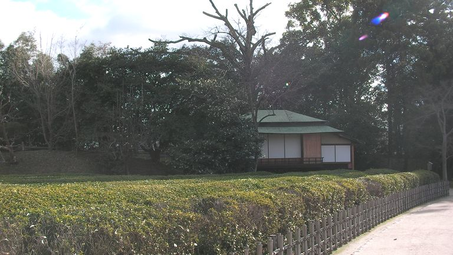
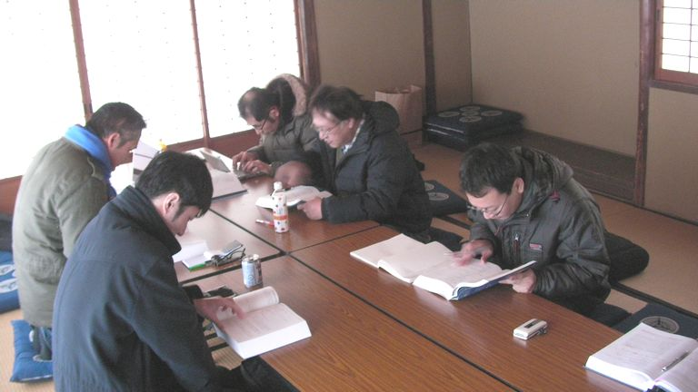
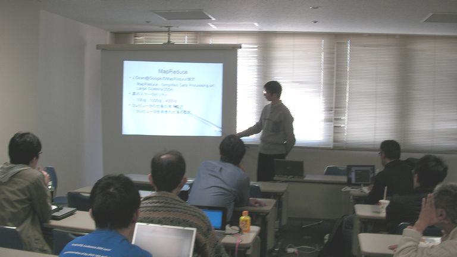
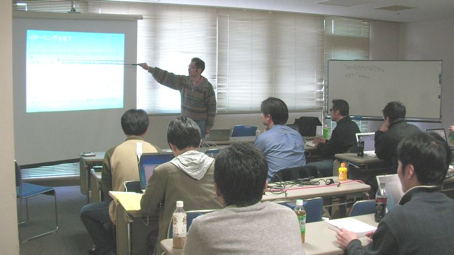
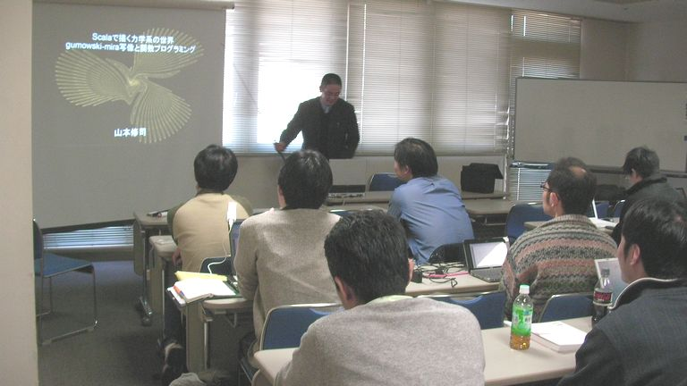

第5回 - オープンラボ岡山
- 修了しました。
?収支報告
参加者 22名（講師3名） [収入] 繰越金 2,043 参加費 3,610 （一人200円） 参加費 +200（白石先生より） ※参加費徴収をイベント後に行った為、全員から徴収できませんでした） ------------------------- 収入合計：5,853 [支出] 後楽園新殿 1,620 岡山国際交流センター第2会議室 3,600 ------------------------- 支出合計：5,220 --------------------------------------- 収入合計ー支出合計：633 花田さんに前回おつり（300円）を返却
?開催風景
ガウディ本読書会


増田さん

スライド：
olo5masudakz.pdf(2470)
白石さん

スライド：
http://docs.google.com/present/view?id=df24rfm9_45hbs6zxcx
山本さん

スライド：
http://www.slideshare.net/yamasushi/scala20091219
コード：
http://github.com/yamasushi/code4joy/tree/master/chaos/
?参加申し込み方法
http://utage.org/enkai/menu.cgi?ENKAI_CODE=openlab20091219
?詳細
オープンラボ岡山
オープンラボ岡山とは、岡山周辺の技術者のための勉強会プラットフォームとして、
勉強会や読書会の場を提供するための組織です。勉強会や読書会を開催したい方、
参加したい方が簡単に集まることの出来る場にしたいと考えています。運営委員は
全員ボランティアで、それぞれが勉強会や読書会の主催者でもあります。興味のあ
る方は是非とも一緒にやりましょう。
■名称： 第5回 オープンラボ岡山
■参加申し込み方法
http://utage.org/enkai/menu.cgi?ENKAI_CODE=openlab20091219
■参加費： 1000円以下（参加者数によって変化します。）
■開催日時：
2009年12月19日（土曜日） 10:00～16:00
16:00から忘年会議2009が開催されます。
そちらも奮って参加ください。
■開催場所：
＜午前＞
岡山後楽園 新殿
http://www.okayama-korakuen.jp/
＜午後＞
岡山国際交流センター第２会議室
http://www.opief.or.jp/oicenter/
※午後のみ参加も可能
■主催:
オープンラボ岡山 実行委員会
■共催：
岡山Javaユーザ会( http://java.okaya.ma/ )
瀬戸内Linuxユーザ会（ http://www.stlug.org/ )
LinuxKernelHackJAPAN( http://hira-consulting.com/wiki )
オープンセミナー＠岡山実行委員会( http://openseminar.okaya.ma/ )
日本PostgreSQLユーザ会 中国支部( http://www.postgresql.jp/ )
----------------------------------------------------------------------
■■■■■■ 午前（10:00～12:00） ■■■■■■
岡山後楽園 新殿
http://www.okayama-korakuen.jp/
【タイトル】ガウディ本読書会 [岡山読み会|http://reading.okaya.ma]
【発表時間】120分
【概要】
「コンピュータプログラミングの概念・技法・モデル」という本を読みます
■■■■■■ 午後（13:00～16:00） ■■■■■■
岡山国際交流センター第２会議室
http://www.opief.or.jp/oicenter/
【タイトル】自己紹介タイム
【発表時間】20分
【タイトル】Googleを追え！オープンソースのクラウド基盤
【発表者名】増田さん
【発表時間】50分ほど
【概要】
オープンソースのクラウド基盤、Hadoop(MapReduce),
Hbase(KeyValueStore),
Eucalyptus(AmazonEC2) を紹介・説明します。
【タイトル】eラーニングについていろいろ
【発表者名】白石啓一(香川高専)
【発表時間】40分ほど
【概要】
eラーニングとは何か？からはじめ，オープンソースを利
用したシステム／コンテンツ，無料で利用できるコンテン
ツに言及していきたいと思います．
【タイトル】scalaで描く力学系の世界～gumowski-mira写像と
関数プログラミング～(仮)」
【発表者名】山本さん
【発表時間】15分ほど
【概要】
数式を使ったお絵かきの話です。数学とプログラミングの
接点に触れてみたいと思います。
【タイトル】カーネルのススメ２００９
【発表者名】ひら
【発表時間】20分ほど
【概要】
分散OperatingSystem Mach3.0について説明します。Mach3.0
はMacOSXのベースにもなったカーネルのひとつです。
■■■■■■ 夜（16:00～19:00） ■■■■■■
忘年会議2009へ参加ください
【参加申し込み】
http://atnd.org/events/1819
【場所】
Ryoutei
岡山県岡山市北区奉還町２－５－２３
TEL：086-214-0883
JR岡山駅西口から徒歩5分
http://www.hotpepper.jp/strJ000032242/
Copyright(C)2009 オープンラボ岡山運営委員会 All rights reserved.